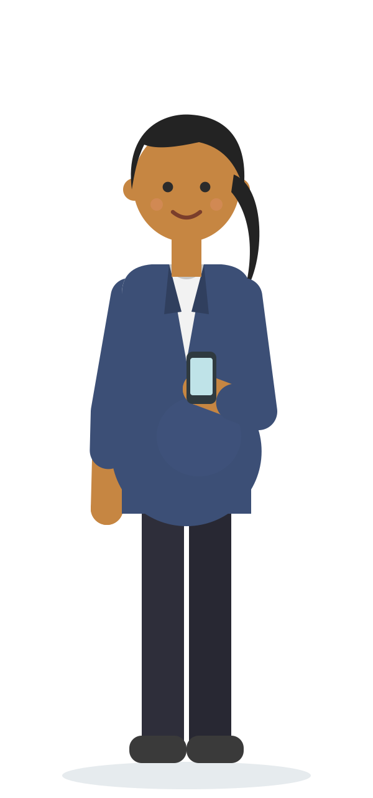
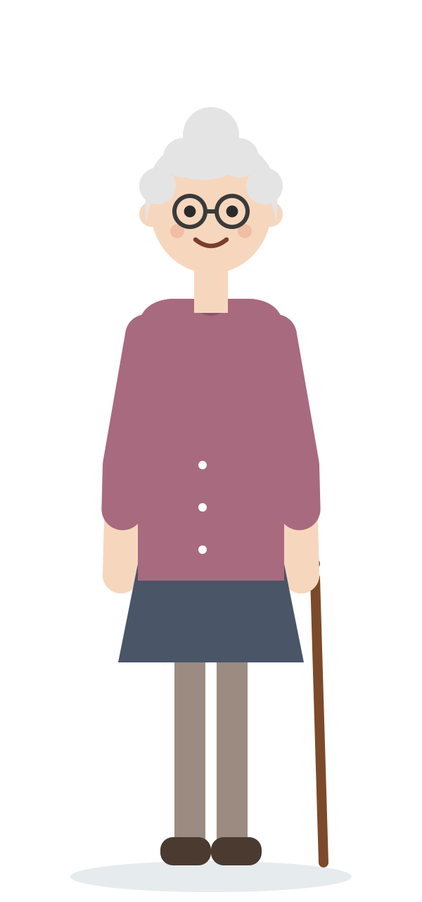
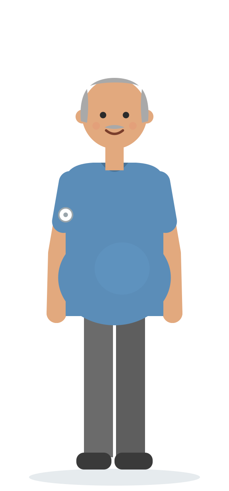

L’atelier des équipes départementales
Un parcours patient.
Vos cartes pour agir.
Choisissez les acteurs et les services numériques utiles. Partagez vos freins, vos leviers et les mots pour en parler aux professionnels.

Emilie · 37 ans
Monique · 89 ans
Philippe · 58 ans1Composez votre équipeUn ordinateur partagé par table ; 5 à 7 participants conseillés, 10 maximum.
2Construisez le parcoursPlacez vos cartes, notez les services et formulez vos arguments.
3Transmettez vos échangesTéléchargez le JSON du groupe et joignez-le au message destiné à l’animateur.
Les ressources de l’atelier et la démonstration
Préparer et animer
Découvrir un exemple de restitution
Importez le JSON dans l’espace animateur pour tester. Retirez les groupes de démonstration avant une séance réelle.
L’espace animateur est un outil de consolidation dans votre navigateur. Les groupes et les fichiers importés restent sur votre appareil. Les documents de cette page sont accessibles à tous les visiteurs.